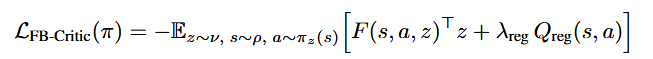
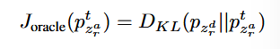
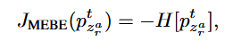
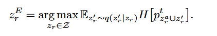
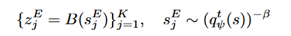
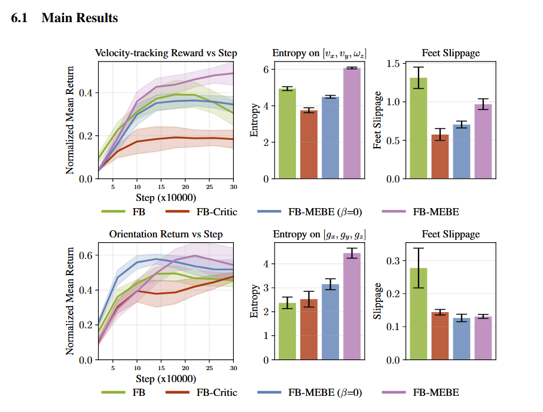

Source: Zotero note; match: first-page title.Open item in Zotero
Maximum Entropy Behavior Exploration for Sim2Real Zero-shot RL:
Zero-shot rl for robotic manipulation: BFM
Quadrupedal Control - online zero-shot RL, FB-MEBE (Directed FB)
Limitations of Regularized Undirected Exploration
a.Finite d and Insufficient data distributions - FB representation collapse
b. undirected exploration strategy - performance degradation and entropy stagnation
-ground the unsupervised policy learning by adding a regularizer

Qreg - Sections F and G
a. Less foot dragging
b. lower exploration - poorer entropy and performance
FB-MEBE
1.density-inverse exploration for online FB

-> no access to the desired behavior distribution:

optimizing policy:

“Consequently, rather than predicting future outcomes, FB-MEBE steers the achieved behavior distribution towards uniformity by sampling exploration behaviors zrE that have the minimum density in the current buffer.”
2. pratical FB-MEBE
state density - KDE, VAE, KNN, RND -> NF(Normalizing Flows)

Main Results:
